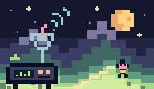

AI & development · Before the peak
Early signals.
Useful details.
A daily dose of things gathering momentum. Up to twenty stories, ten minutes or less, and enough context to decide what deserves your attention.
Explore the latest editionNovember 1, 2026 · 12 stories · Audio + field notes

Agents
Give agent actions a checkpoint
First up, JevAct puts a checkpoint between an agent and selected tool calls.
Follow this thread ↗Miss something?
It's all here.
How we pick
Interesting is a start.
Evidence gets it in.
We look across project activity, developer communities, research and curated public posts. GitHub is one source, not the whole map.
Posts lead us to work we can inspect: a paper, a release, a working project. Big claims stay attributed. Limitations stay visible.
Every story links its sources and explains why it made the cut. Dated counts are clues, not a prediction that something will take off.
We keep a coverage history. When a topic returns, we explain what changed. These are editorial picks from a bounded source sample, not a claim to have measured the entire internet.